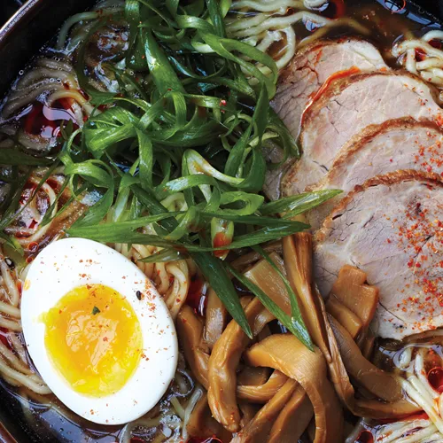

Shoyu Ramen

Description
This is a Shoyu Ramen recipe page.
The image and recipe steps are sourced from this article written by Alison Roman.
Ingredients
Kombu Dashi and Tare
- 2 pieces dried kombu
- 1/2 cup reduced-sodium soy sauce
- 2 Tbsp. dry sake
- 1 Tbsp. mirin
Pork and Stock
- 1 1/2 lb. boneless pork shoulder (Boston butt)
- Kosher salt and freshly ground black pepper
- 2 Tbsp. vegetable oil
- 2 lb. chicken necks, backs, and/or wings
- 1 lb. pork spareribs
- 2 bunches scallions, chopped
- 2 carrots, peeled, cut into pieces
- 1 head of garlic, halved horizontally
- 1 piece ginger, peeled, sliced
- 1/4 cup bonito flakes
Ramen and Garnishes
- 3 large eggs
- 6 5-oz. packages fresh thin and wavy ramen noodles (or six 3-oz. packages dried)
- 1/2 cup menma (fermented bamboo shoots)
- 6 scallions, thinly sliced
- 3 toasted nori sheets, torn in half
- Chili oil, toasted sesame oil, and shichimi togarashi (for serving)
Steps
Kombu Dashi and Tare
- Two days ahead: For the dashi, combine kombu and 4 quarts cold water in a large bowl. Cover and let sit at room temperature at least 8 hours and up to 12 hours. For the tare, combine soy sauce, sake, and mirin in a small bowl; cover and chill.
Pork and Stock
- One day ahead: Season pork shoulder with salt and pepper. Roll up and tie with kitchen twine at 2” intervals. (This helps keep the meat intact while cooking and makes for round, compact slices.)
- Heat oil in a large heavy pot (at least 8 quarts) over medium-high heat Cook pork shoulder, turning, until brown all over, 10–12 minutes. Add chicken, spareribs, scallions, carrots, garlic, ginger, and bonito flakes. Remove kombu from dashi; discard. Add as much kombu dashi as will fit in pot once liquid is boiling (reserve remaining dashi). Bring to a boil, reduce heat, and simmer, skimming the surface occasionally and adding remaining dashi as liquid reduces, until pork shoulder is tender and stock has reduced to about 2 quarts, 2½–3 hours.
- Remove pork shoulder from stock and let cool. Wrap tightly in plastic and chill until ready to use. (Chilling pork will make meat easier to slice.) Strain stock through a fine-mesh sieve into another large pot or a large bowl or container; discard solids (including ribs and chicken). Cover and chill.
Ramen and Garnishes
- Bring a medium pot of water to a boil. Carefully add eggs one at a time and boil gently for 7 minutes. (Egg yolks should be shiny yellow and almost jammy; egg white should be just set.) Drain eggs and transfer to a bowl of ice water to stop cooking; let cool. Peel; set aside.
- Remove string and thinly slice pork; cover and set aside.
- When ready to serve, bring stock to a simmer; it should be very hot. At the same time, cook noodles in a large pot of boiling water according to package directions until al dente; drain (no need to salt the water, as ramen noodles contain more salt than pasta).
- Just before serving, divide noodles among 6 deep bowls. Top with sliced pork, placing it off to one side. Add tare to hot stock and ladle over pork to warm through (stock should come up just to the level of the noodles).
- Place a small pile of menma next to pork. Halve eggs and place next to menma. Place a small pile of sliced scallions next to egg. Tuck half a sheet of nori between side of bowl and noodles so it’s just poking out.
- Serve ramen with chili oil, sesame oil, and shichimi togarashi.
- Do ahead: Eggs can be cooked 1 day ahead. Keep unpeeled eggs covered in cool water. Cover and chill.